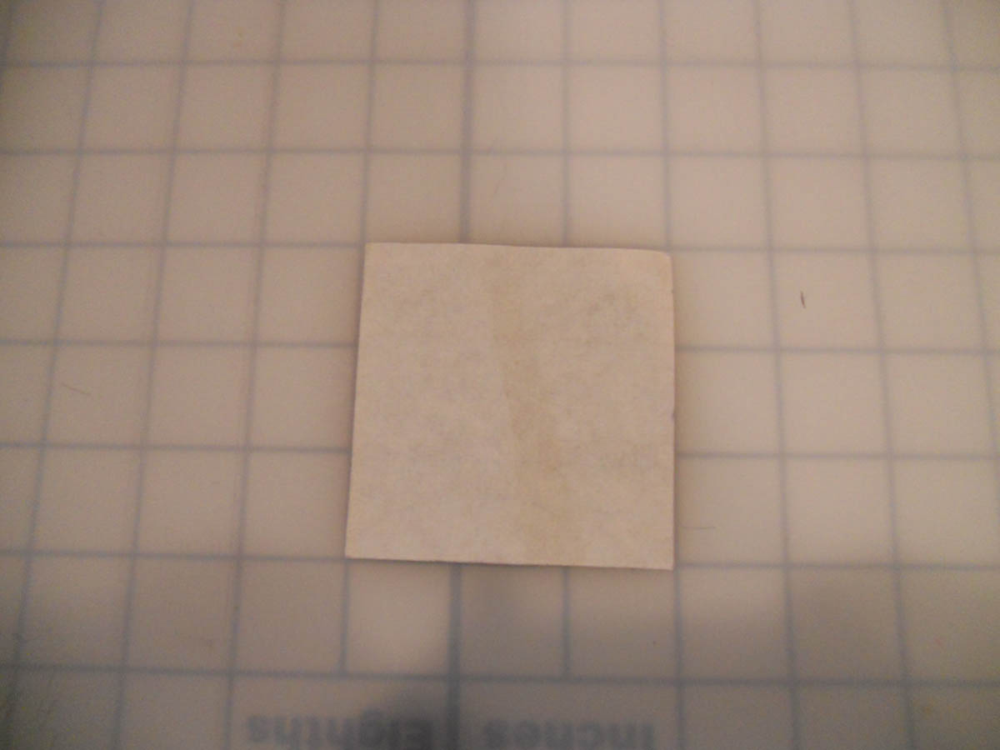

How to do an Origami Squash Fold
A squash fold is created exactly like it sounds- by opening up a flap of paper and "squashing" it flat. On this page, I will show you how to do one.
the bottom edge.
don't have to be exact.
and open it with your finger.
pushing down on the top with a finger.

fold!